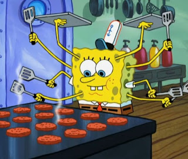

I’M READY I’M READY I’M READY I’M READY I’M READY I’M READY I’M READY I’M READY
Spongebob is a childhood legend, from the quirky laugh to the uplifting attitude he is always a thrill to watch. The yellow sponge is best known for his square pants and his legendary pineapple house at 124 Conch Street in Bikini Bottom. He lives in his pineapple with his pet snail Gary, happy as a claim eating his snailpoe. Spongebob’s biggest achievement when he finally gets his boating license on June 14, 1986 and is able to leave Mrs. Puff’s boating school. The happy fellow works as a cook at the ocean famous Krusty Krab making the top secrete Krabby Patties.
Patrick Star is Spongebob’s best friend for life!!! They share a similar personality and love to go jellyfish hunting through the open waters. Both are not favored by the other citizens of Bikini Bottom, but the two are so optimistic they do not even notice others annoyance with them.